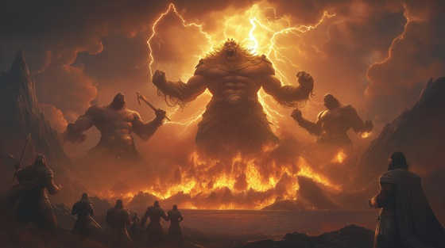

The Hecatoncheires, or "Hundred-Handed Ones," were the monstrous children of Gaia and Uranus—immense beings with a hundred arms and fifty heads each. Feared even by their own father, they were cast deep into Tartarus, the abyssal prison below the Underworld, where they remained trapped for ages.
During the Titanomachy, Zeus sought to shift the balance of power. He descended into the depths of Tartarus and freed both the Hecatoncheires and the Cyclopes, unleashing them upon the Titans. The Cyclopes gifted Zeus his lightning bolt, Poseidon his trident, and Hades his helm of darkness—while the Hundred-Handed Ones became unstoppable engines of divine destruction.
This mythic act not only symbolized a divine alliance of the outcast but revealed the Titans' greatest mistake: they had buried the very power that would destroy them.
Chains of the Hundred
We slept beneath the blackened stone
Our mouths sewn shut, our names unknown
A hundred hands, a hundred screams
Buried in our father’s dreams
Forgotten sons in walls of flame
But even ash recalls its name
Chains of the hundred, wrath unbound
We are the fists that shake the ground
The Titans locked us far below
But now we rise through fire and woe
I heard them cry through deepest night
Their fury pounding out of sight
I broke their bonds, I called their rage
And turned the war with gods uncaged
We do not serve, we do not pray
But we will burn what blocked the way
Chains of the hundred, wrath unbound
We are the fists that shake the ground
The Titans locked us far below
But now we rise through fire and woe
One hundred hands, one hundred stones
We cast the sky in broken bones
The towers fall, the walls decay—
The Titans scream and fade away
TITAN GENERAL: “What madness breaks our gates?”
ZEUS: “Not madness. Justice with a hundred hates.”
Chains of the hundred, wrath unbound
We are the fists that shake the ground
The Titans locked us far below
But now we rise through fire and woe
No forge can hold what gods once chained—
The earth remembers every name